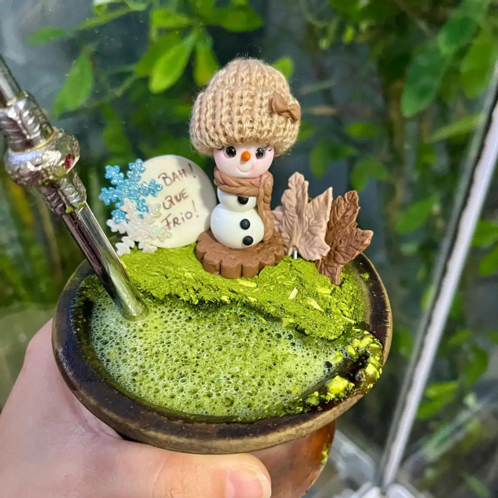
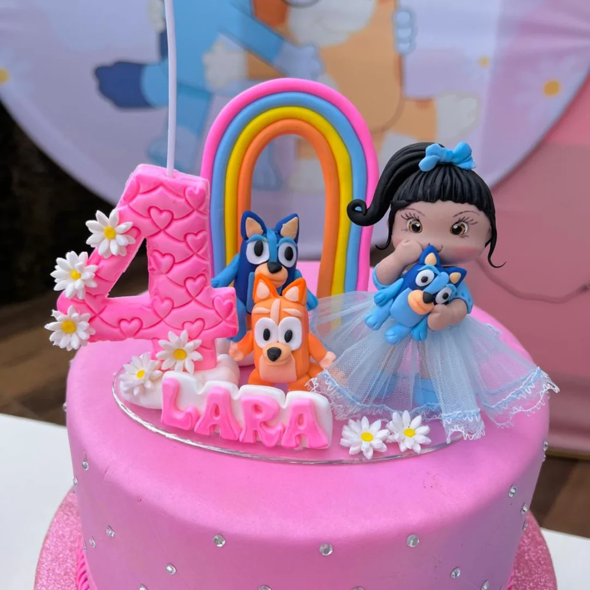
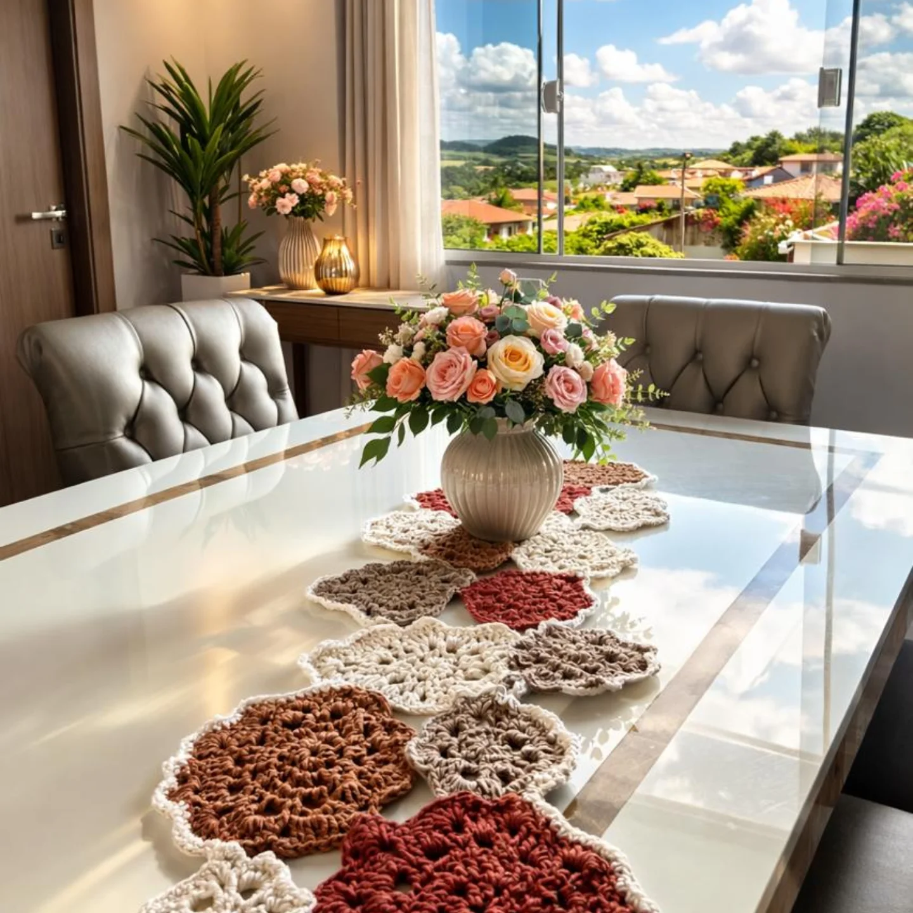
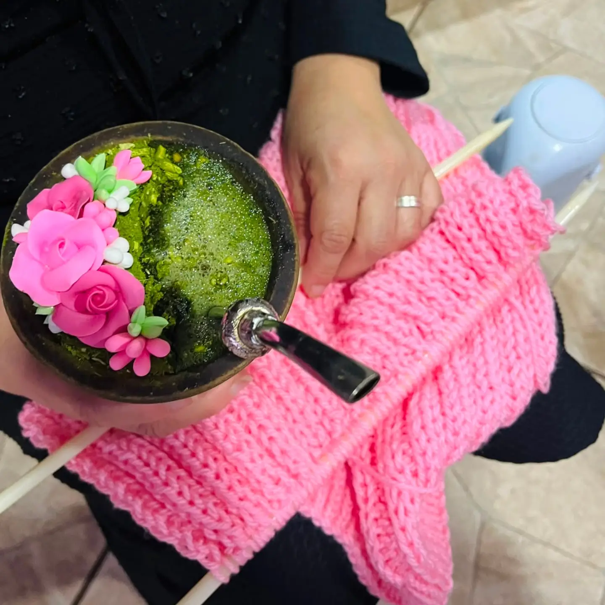
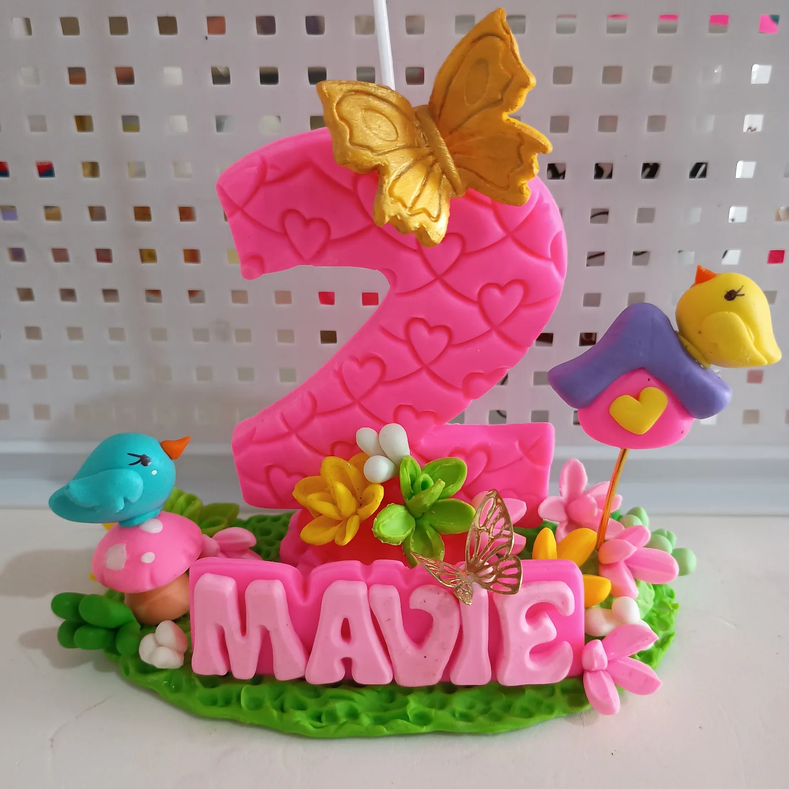
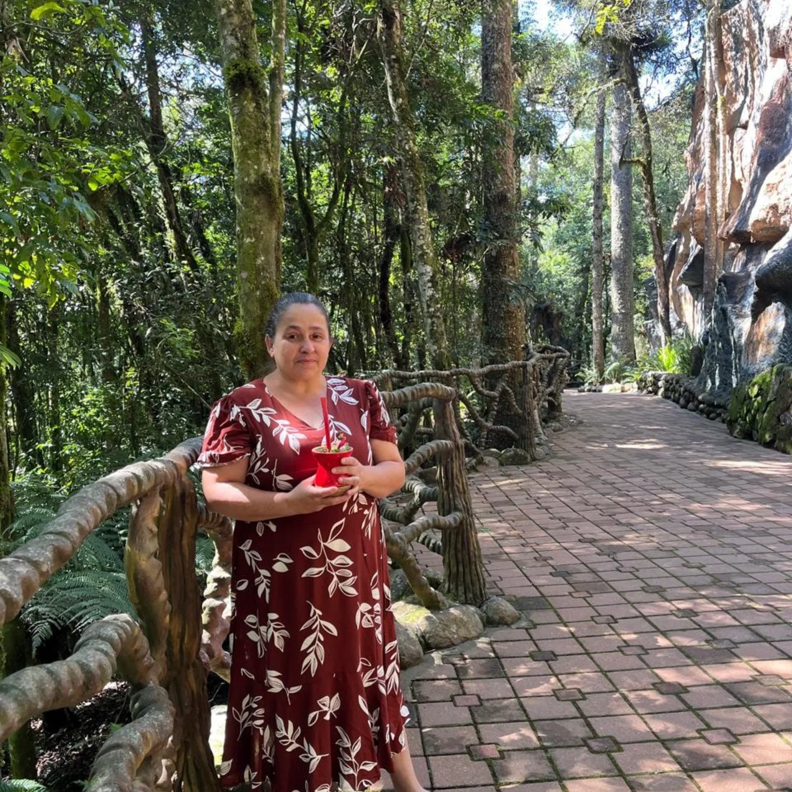

01
Decoração de Chimarrão
Detalhes artesanais que transformam o chimarrão em uma peça ainda mais especial, perfeita para uso próprio ou presente.
Artesanato feito à mão em Alvorada/RS
Criações personalizadas para transformar presentes, comemorações e momentos especiais em algo único. Decoração de chimarrão, velas para topo de bolo, crochê, tricô e muito mais — com pedidos por unidade ou no atacado e envio para todo o Brasil.


Criações artesanais
Cada criação nasce de um trabalho cuidadoso, pensado para quem procura algo personalizado, delicado e cheio de significado.
Detalhes artesanais que transformam o chimarrão em uma peça ainda mais especial, perfeita para uso próprio ou presente.
Peças personalizadas para aniversários e comemorações, criadas de acordo com o tema, nome, idade ou ocasião.

Peças feitas à mão com cuidado, textura e personalidade para decorar ou presentear.

Trabalhos artesanais produzidos sob encomenda, respeitando cada ideia e necessidade.

Tem uma ideia diferente? Converse com a Simone e descubra as possibilidades para criar uma peça exclusiva.
O carro-chefe da Simone
O chimarrão faz parte de momentos de conversa, encontros e tradições. Com detalhes artesanais personalizados, ele também pode ganhar personalidade e se transformar em um presente único.
A Simone cria decorações para chimarrão feitas à mão, com diferentes temas, cores e composições, sempre respeitando a ideia de cada cliente.
Para momentos especiais
Aniversários e momentos especiais merecem detalhes feitos especialmente para eles. A Simone produz velas e topos personalizados de acordo com o tema, personagem, nome, idade ou estilo escolhido.
Sua encomenda
Entre em contato pelo WhatsApp e explique o que deseja. Você também pode enviar referências, tema, cores ou inspirações.
Modelo, personalização, quantidade, valor e prazo são definidos de acordo com sua encomenda.
Sua peça é produzida artesanalmente e, quando estiver pronta, pode ser enviada pelos Correios para qualquer lugar do Brasil.
Atacado & revenda
A Simone também atende lojistas, revendedores, parceiros e clientes que precisam de pedidos maiores.
Os pedidos no atacado são realizados a partir de 6 unidades, sempre em múltiplos de 6, e podem ser personalizados conforme o produto e a disponibilidade de produção.
Solicitar orçamento de atacadoPedido mínimo para atacado
Trabalhos realizados

Por trás de cada peça
Por trás da Simone Decoração e Artesanato existe uma artesã apaixonada pelo trabalho manual e pelos pequenos detalhes que tornam cada criação única.
Em Alvorada/RS, Simone transforma ideias em peças artesanais criadas especialmente para seus clientes. Entre decorações para chimarrão, velas, crochê, tricô e diferentes trabalhos personalizados, cada encomenda recebe atenção especial do início ao fim.
“Amor em cada detalhe!”Simone
Antes de encomendar
Cada encomenda é única.
E a conversa começa por aqui.
Sim. Grande parte do trabalho da Simone é desenvolvido sob encomenda. Você pode conversar diretamente pelo WhatsApp e explicar sua ideia, tema, cores ou referência.
Não. Simone está localizada em Alvorada/RS e atende clientes de Porto Alegre e Região Metropolitana, além de realizar envios para todo o Brasil.
Sim. Os pedidos podem ser enviados pelos Correios para diferentes regiões do Brasil.
Sim. O atendimento no atacado está disponível para pedidos a partir de 6 unidades, sempre em múltiplos de 6, conforme o tipo de produto e a disponibilidade de produção.
O prazo varia conforme o tipo de produto, nível de personalização e quantidade solicitada. O prazo é informado antes da confirmação do pedido.
Basta entrar em contato pelo WhatsApp, explicar o que deseja e conversar diretamente com a Simone para definir os detalhes da encomenda.
Sim. Simone trabalha tanto com pedidos individuais quanto com pedidos no atacado.
A personalização depende do tipo de produto, mas pode envolver cores, temas, personagens, nomes, idades e outros detalhes definidos durante o atendimento.
Atendimento
A Simone Decoração e Artesanato está localizada em Alvorada, no Rio Grande do Sul, atendendo também Porto Alegre e Região Metropolitana.
Mesmo para quem está longe, é possível fazer sua encomenda diretamente pelo WhatsApp e receber pelos Correios em diferentes regiões do Brasil.
Amor em cada detalhe!
Fale diretamente com a Simone, conte o que você imaginou e descubra as possibilidades para sua encomenda.